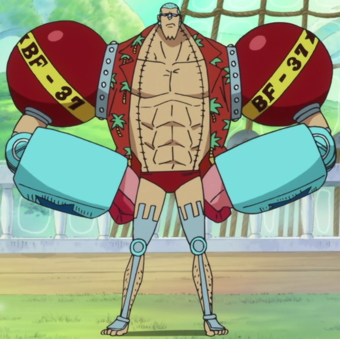

Franky (フランキー, Furankī?) de son vrai nom Cutty Flam (カティ・フラム, Kati Furamu?) est un personnage faisant partie de l'univers du manga One Piece.
Franky est un personnage assez connu de Water Seven. Son activité consiste à détrousser les pirates puis à vendre leur navire (ou ce qu'il en reste) aux charpentiers de Water Seven. Le problème de Franky vient du fait qu'il a tendance à tout dévaster sur son passage, ce qui n'est pas pour plaire aux autorités citadines. Il est, avec Icebarg, l'un des meilleurs charpentiers navals du monde. Plus tard, il deviendra le charpentier de l'Équipage du chapeau de paille. On les appelait, ses camarades de Water Seven et lui, les « Démanteleurs de Navires ».
voix japonaise :Kazuki Yao
voix francaise :Martin Spinhayer
fruit du demon :aucun (cyborg)
prime :94 milLions berry
